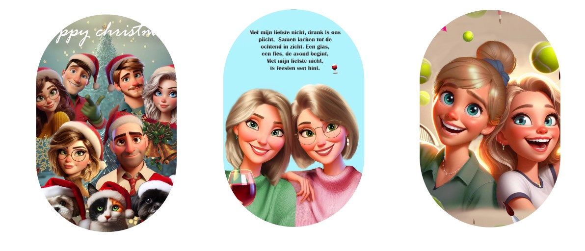

Mijn Werk
Initialen opdracht :
Dit was een oefening met initialen, waarbij ik die van Bruno Mars gebruikte omdat ik toevallig naar zijn muziek luisterde. Hij is niet per se mijn favoriete artiest, maar ik waardeer zijn muziek wel. Ik koos voor bruine kleuren omdat ik ze eleganter vind dan bijvoorbeeld zwart.
Hieronder is mijn oude project van Nomo, dat eerst blauw was en nu kleurrijk is, zoals je kunt zien op mijn 'over mij' pagina.
Fontfolio:
In mijn fontfolio koos ik voor een blauw galaxy-effect, wat een moderne en tijdloze uitstraling geeft. De kosmische accenten en organische vormen maken het visueel aantrekkelijk en veelzijdig.
Elk lettertype is ontworpen voor leesbaarheid en expressie, zowel in print als digitaal.
De opdracht was geweldig leuk! Het blauwe galaxy-effect gaf een toffe draai, en ik genoot van het creatieve proces en het ontdekken van nieuwe ontwerpaspecten. Kortom, een superleuke ervaring!
Tattoo :
Ik kreeg de kans om een tattoo-ontwerp te maken voor mijn nonkel. Hij wilde de silhouetten van zijn vrouw en dochters op zijn been in zwart-wit-rood. Met plezier heb ik dit digitaal uitgewerkt, zodat hij een idee kreeg van het resultaat.
Het was fijn om iets persoonlijks voor hem te creëren.
De samenwerking maakte deze opdracht bijzonder. Mijn nonkel had specifieke aanpassingen, en ik maakte graag verschillende iteraties op basis van zijn feedback. Uiteindelijk kozen we voor een witte achtergrond met een dikke verfvlek als omlijning, wat het ontwerp uniek maakte.

Langnek lichtstoed :
In een betoverende lichtstoet kwam Langnek, het iconische personage uit het Efteling Sprookjesbos, tot leven. Met zorgvuldige verlichting werd zijn kenmerkende lange nek schitterend belicht, waardoor hij het stralende middelpunt werd.
De lichtstoet bracht niet alleen Langnek, maar ook andere geliefde figuren uit de Efteling tot leven, waardoor bezoekers werden meegenomen op een magische reis door de wereld van fantasie. Een avond waarin de grens tussen realiteit en sprookje vervaagde en de magie van de Efteling opnieuw tot leven kwam in een schitterend schouwspel van licht en verwondering.
Ik vond het echt leuk om te helpen bij de lichtstoet en mee te werken aan de wagen.
Het was gezellig samenwerken en de sfeer was top. Ik kijk al uit naar de volgende keer dat ik kan meedoen!
Gepersonaliseerde Cadeautjes :
Cadeautje voor ons gezin
Cadeautje voor nichten
Cadeautje voor vrienschap
Onlangs heb ik leuke Disney-geïnspireerde cadeautjes gemaakt voor mijn gezin, moeder met haar nicht en mijn vriendin. Met fotobewerking heb ik iedereen als cartoonfiguur in een Disney-stijl getekend, waarbij ik hun kenmerken en persoonlijkheid vastlegde. Mijn gezin kreeg een levendig Disney-tafereel, mijn moeder en nicht een hartverwarmende illustratie van hun band,
en mijn vriendin een speciaal cadeau dat onze vriendschap in een geanimeerde sfeer plaatste. Het was niet alleen creatief maar ook emotioneel waardevol, met positieve reacties van mijn dierbaren. Zeker een van mijn favoriete projecten!